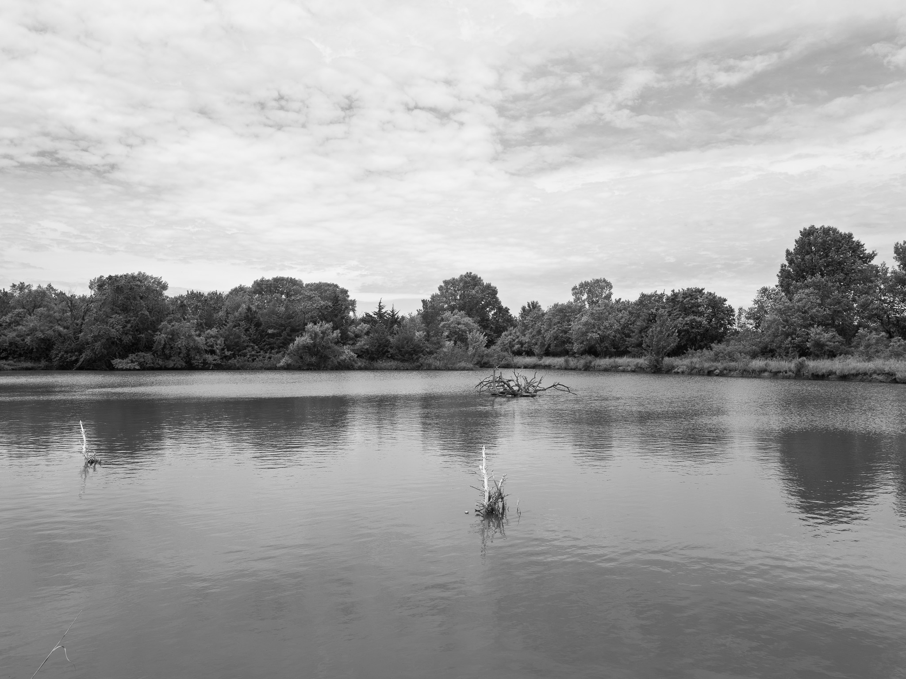
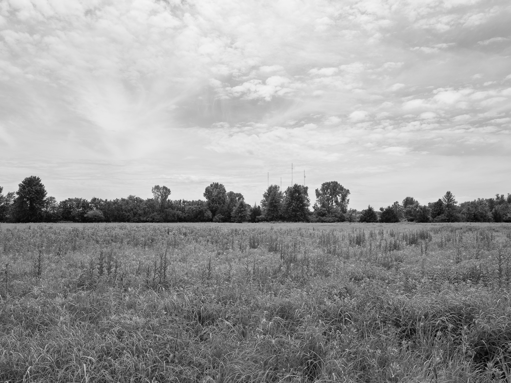
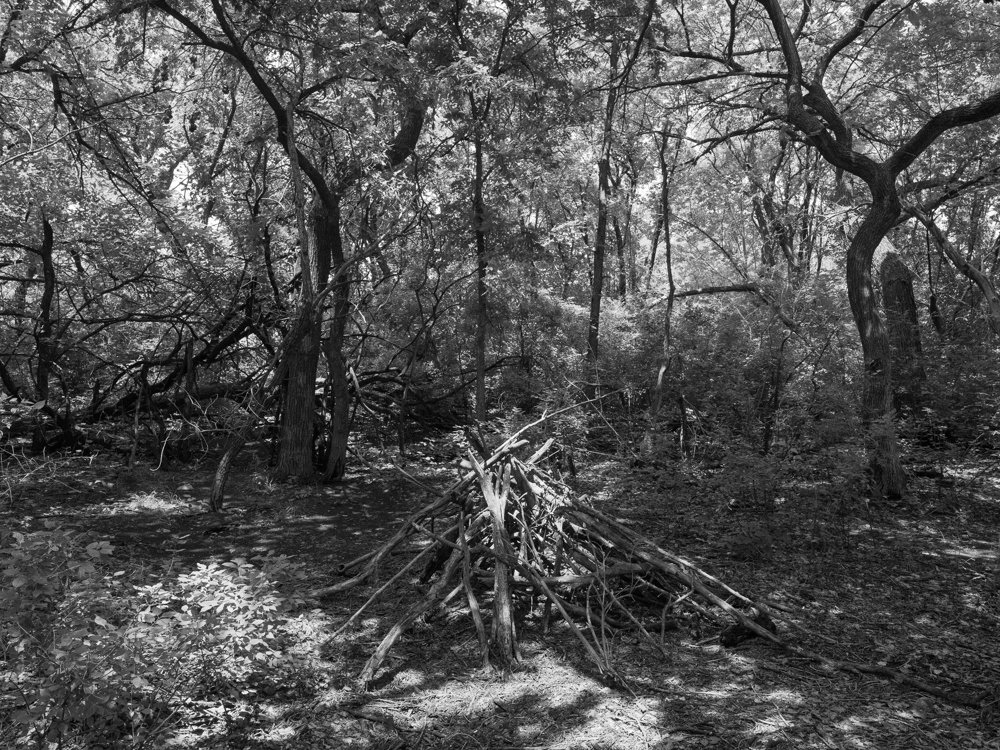
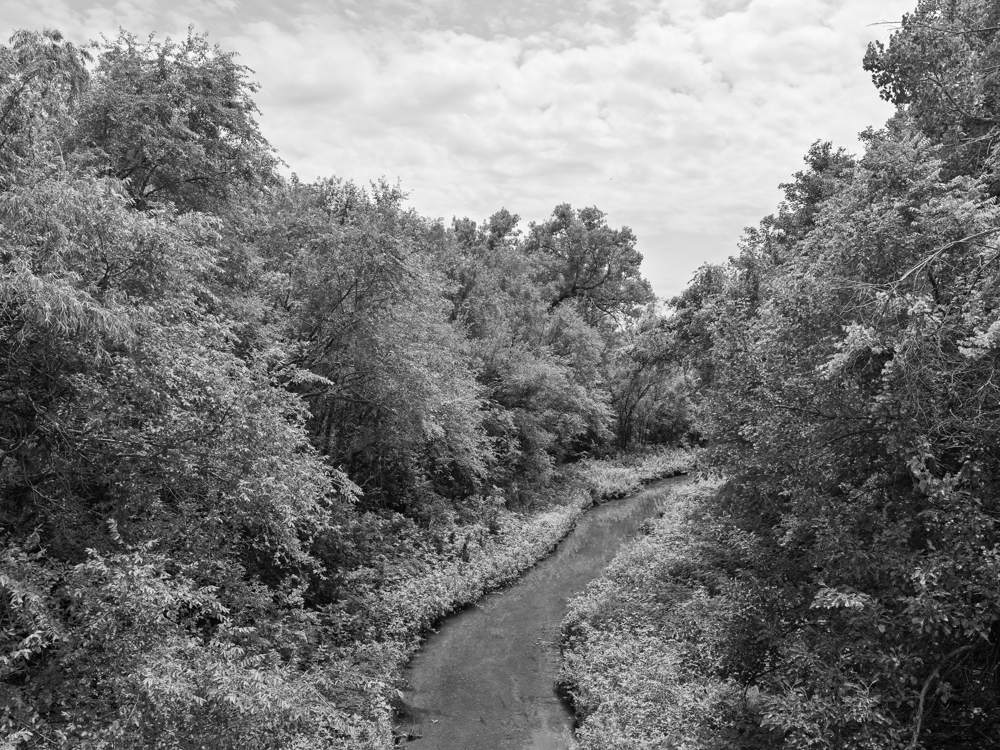

Public Lands Institute
Map
Images
Archive
About
Chisholm Creek Park
KS

Chisholm Creek Park 1 · 2026-06-19
_DSF3677.jpg

Chisholm Creek Park 2 · 2026-06-19
_DSF3687.jpg

Chisholm Creek Park 3 · 2026-06-19
_DSF3692.jpg

Chisholm Creek Park 4 · 2026-06-19
_DSF3694.jpg
View all 4 images →
← Pinckney Island National Wildlife Refuge
Lathrop State Park →